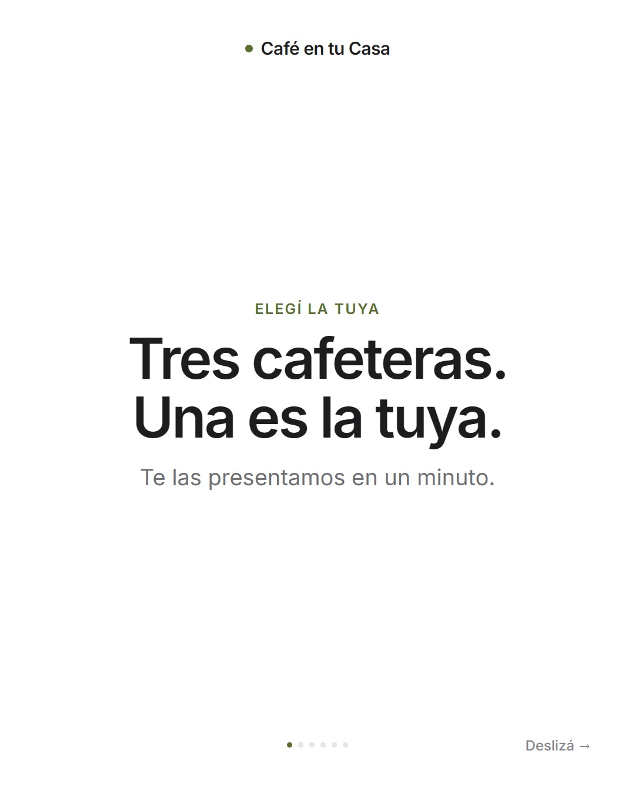
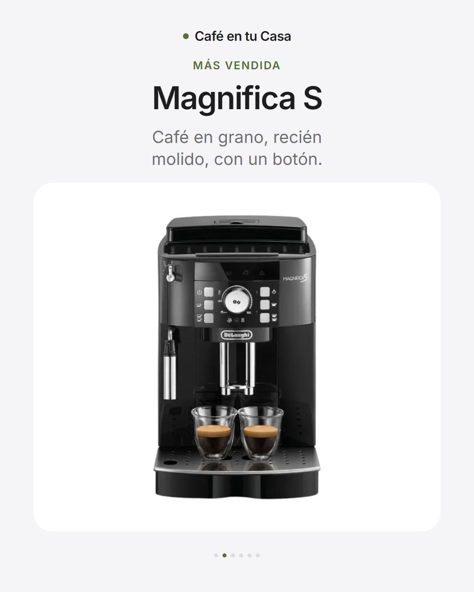
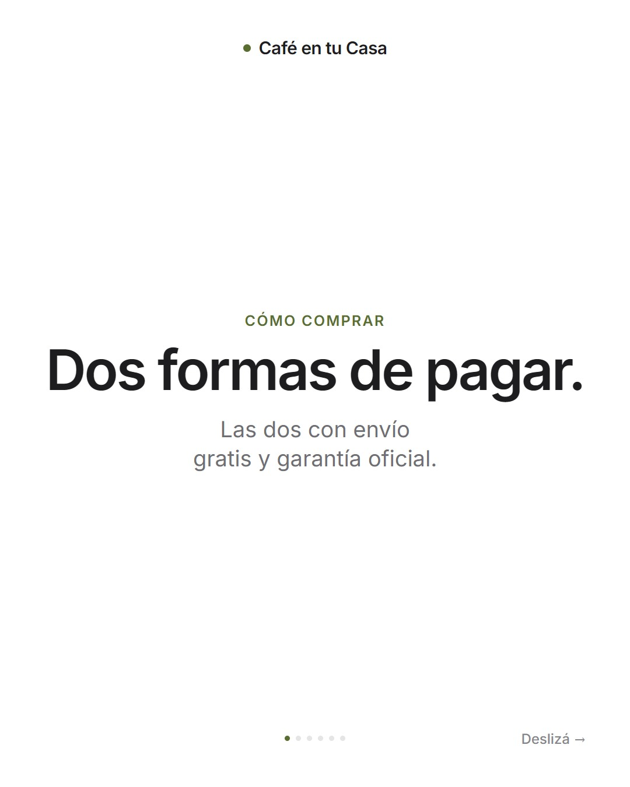
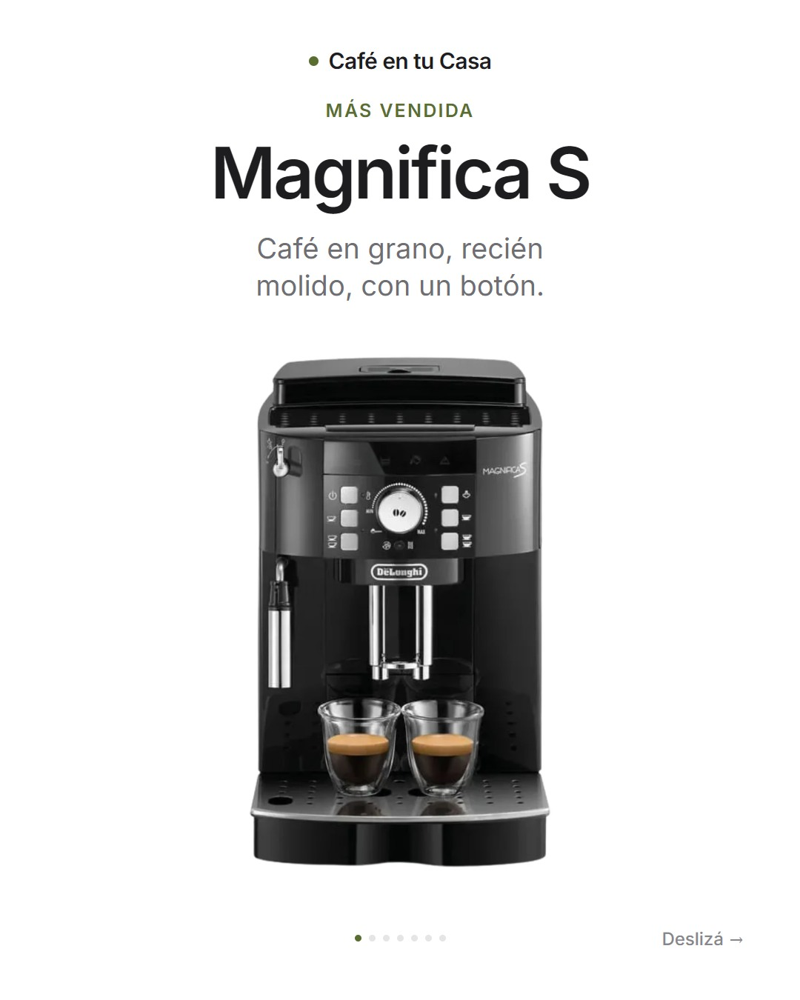
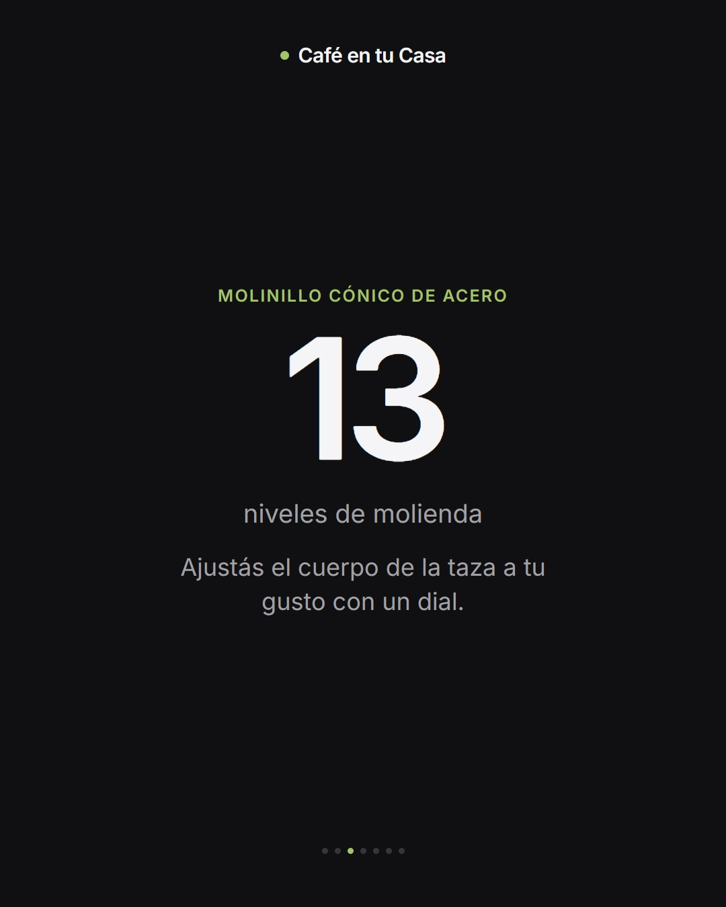
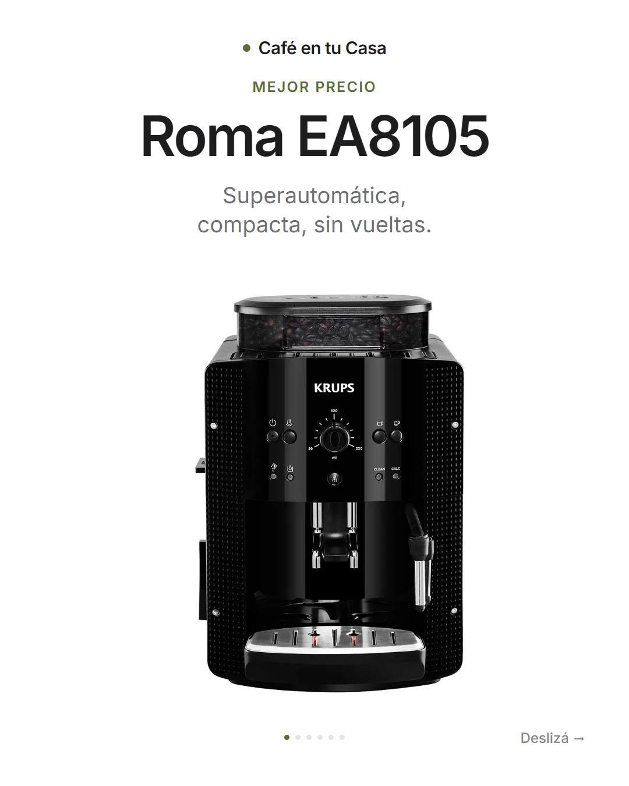
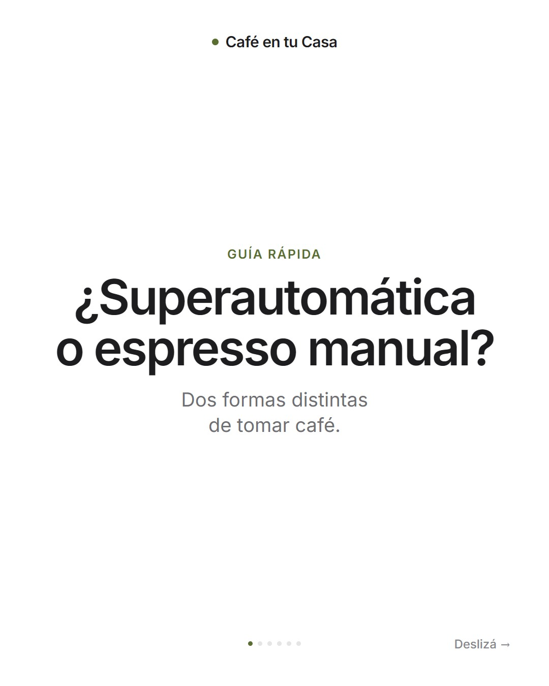
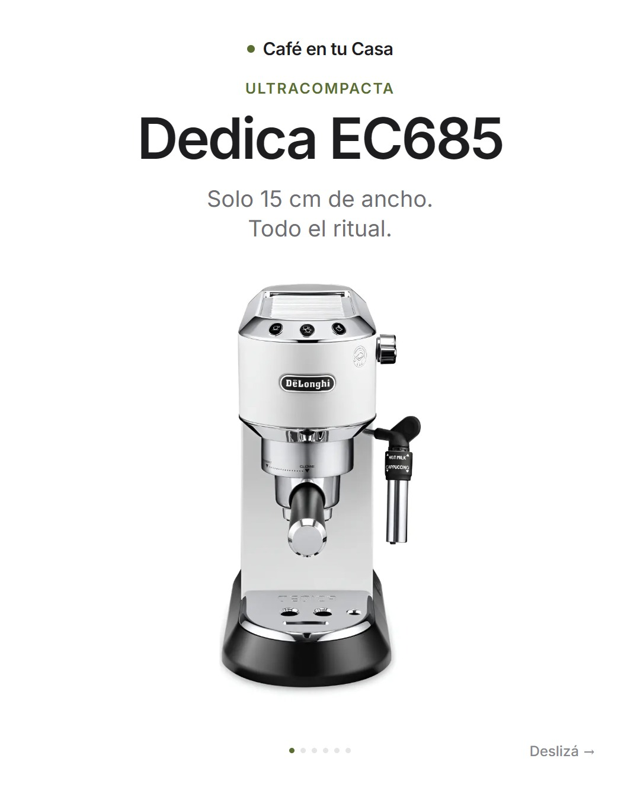
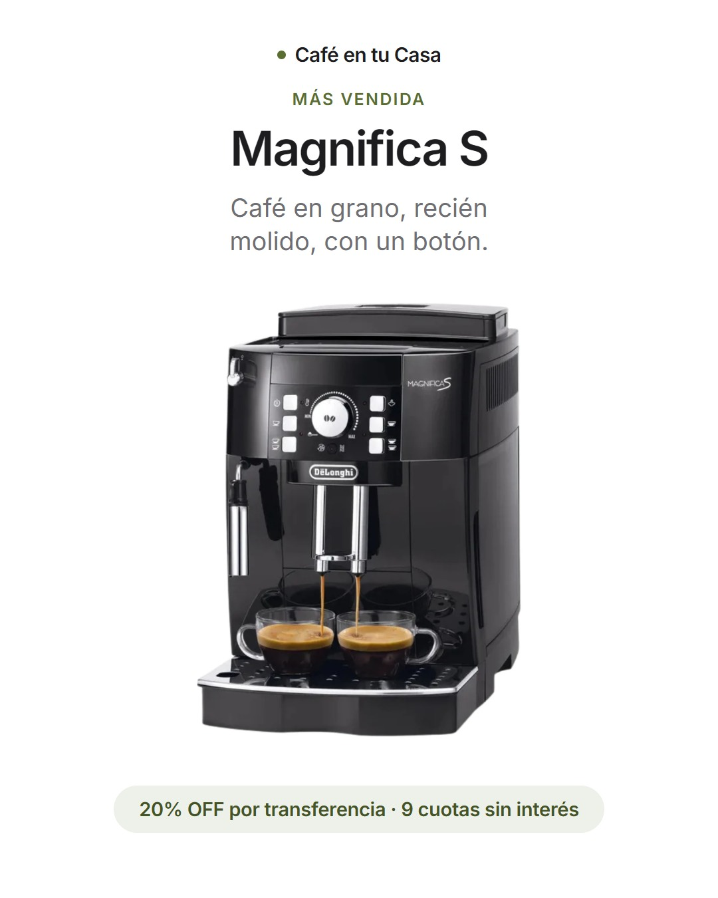

Cómo se ve y cómo habla la marca en el sitio, en Instagram y en cualquier pieza nueva. Sale de lo que ya está publicado en cafe-en-tu-casa.vercel.app.
Café en tu Casa vende cafeteras espresso y superautomáticas De'Longhi y Krups. La marca tiene que verse más cuidada que una publicación de Mercado Libre, y ser igual de clara a la hora de comprar.
Pocas palabras, mucho aire y el producto como protagonista. Nada de estallidos, sellos ni signos de exclamación en fila.
Siempre se entiende qué se vende, cuánto sale y cómo se paga. Las dos formas de pago van juntas: transferencia con descuento y cuotas sin interés.
Habla de vos, como un vendedor que sabe y no apura. Ayuda a elegir antes que a cerrar la venta.
Hoy la marca se firma con un punto oliva seguido del nombre en Inter seminegrita. El punto mide un poco menos de la mitad de la altura de la letra y va siempre a la izquierda.
No: en mayúsculas ni espaciado
No: el punto de otro color
No: sobre degradados o fotos
Hay cuatro propuestas de logo con símbolo (Refugio, Grano hogar, Doble pico y La taza) que todavía no se aplicaron en el sitio ni en Instagram. Cuando se elija una, esta sección se actualiza con el símbolo, sus versiones y la foto de perfil.
Así se ve la marca en Instagram y en el resto de las redes. Elegí un logo y cambia en todos lados a la vez: la versión actual y las cuatro propuestas con símbolo.









Se sube cuadrada, de 1080 × 1080 px. Instagram la recorta en círculo desde el centro, así que el símbolo ocupa el 70% del ancho y nada toca el borde.
Para el sitio, las piezas, las etiquetas de las cajas y la firma de mail.
La misma foto de perfil que en Instagram, para que quien llega desde el link reconozca la cuenta.
Portada de un solo color con la firma centrada, y la misma foto de perfil.
El logo va en un cuadrado de bordes redondeados, sobre el mismo fondo oscuro.
Cinco tapas con el mismo fondo que la foto de perfil y un ícono de línea: Cafeteras, Comprar, Envíos, Tips y Test.
Qué vendés, las dos formas de pago y el envío, en tres líneas. El enlace lleva siempre al sitio.
Se alternan fondos blancos, grises, negros y oliva para que el perfil no quede de un solo tono. Las portadas llevan poco texto, porque en la grilla se ven chicas.
La marca vive en neutros. El oliva es el único color propio y se usa poco: el punto, los epígrafes y las píldoras. Tocá un color para copiar su código.
Una sola familia: Inter, de Google Fonts, en los pesos 400, 500, 600 y 700. Los títulos van en 600 con las letras un poco juntas; el cuerpo, en 400.
En orden: la tipografía del sistema (San Francisco, Segoe UI, Roboto), Helvetica o Arial. Nunca una con serifas ni manuscrita.
Son las mismas en el sitio y en Instagram. Todas tienen bordes muy redondeados y ninguna lleva sombra dura ni borde de color.
Una o dos palabras arriba del título. Dice qué es lo que viene: la etiqueta del producto o el tema.
Para las dos formas de pago y para datos cortos. Fondo oliva al 12% y texto oliva oscuro.
Negro sobre claro, blanco sobre oscuro, forma de píldora. Uno solo por pieza, con la acción escrita.
Un número enorme con su unidad chica al lado y una línea que lo explica. Uno por placa.
10 px en elementos chicos, 16 px en tarjetas, 22 a 30 px en tiles y fotos. Los botones y píldoras, completamente redondos.
Los márgenes son generosos: en una placa de 1080 px de ancho, al menos 76 px a cada lado. Si algo no entra, se saca texto antes que achicar el margen.
Las fotos son de la cafetera real que se vende, sobre fondo blanco, enteras y sin recortar.
La Magnifica S tiene cinco fotos; la Krups Roma y la Dedica, una sola cada una. Sumar fotos propias de esas dos es lo que más mejoraría las piezas.
Español rioplatense, frases cortas y concretas. Primero el beneficio, después el dato. Un emoji como mucho por texto, y ninguno dentro de las imágenes.
Todas las piezas llevan la marca arriba, un solo fondo y una idea por pantalla.
En historias y reels, todo lo que se lee queda entre los 300 y los 1500 px de alto. Arriba y abajo Instagram pone sus botones y el texto.
Cuatro: blanco, gris claro, negro y oliva oscuro. Dentro de un carrusel o un video se alternan para dar ritmo; la portada y el cierre suelen ir en negro u oliva.
En pesos, solo en el texto de la publicación y en las historias. En las imágenes del perfil va «20% OFF por transferencia» y la cantidad de cuotas, sin montos.
Portada con una frase, una idea por placa, y cierre con la acción. Abajo, los puntitos de avance; en la primera, «Deslizá».
De 14 a 25 segundos, sin música incorporada. Cada video usa un recurso propio (números gigantes, pantalla partida, dial, vasos) para que no se vean todos iguales.
Siempre mandan a un lugar: «Link en la bio», «Hacé el test de 4 preguntas» o «Escribinos por WhatsApp».
Blanco, gris, negro y oliva. Nada más.
Título, una línea de apoyo y aire.
La foto de la cafetera que se vende, entera y sobre blanco.
Transferencia con descuento y cuotas sin interés, siempre juntas.
Datos de la ficha y precios del día. Sin promesas que no se puedan cumplir.